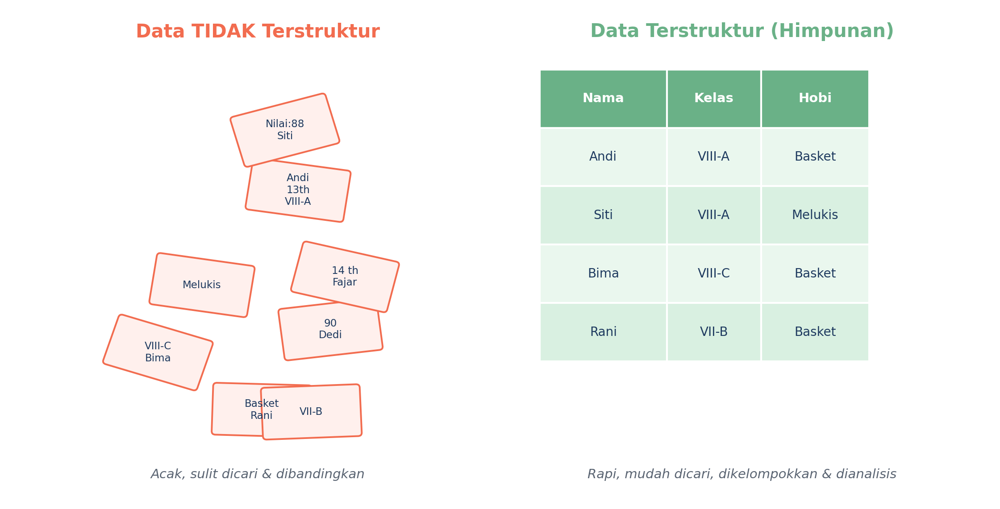
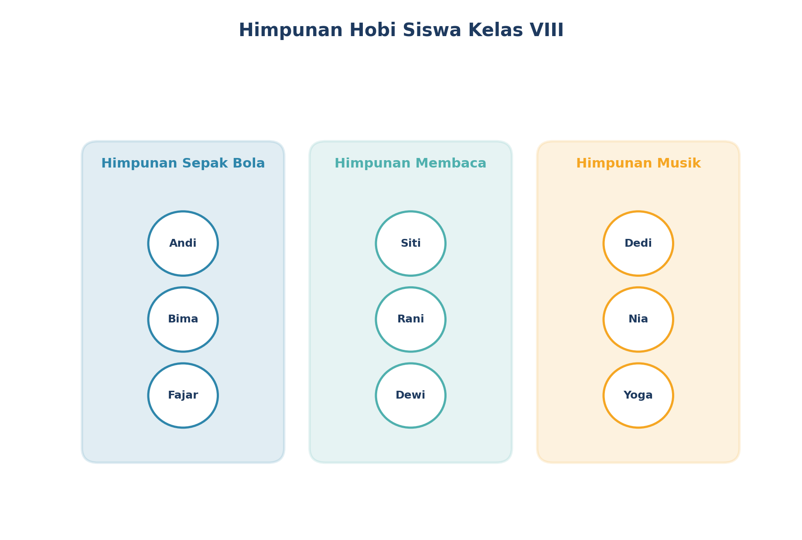
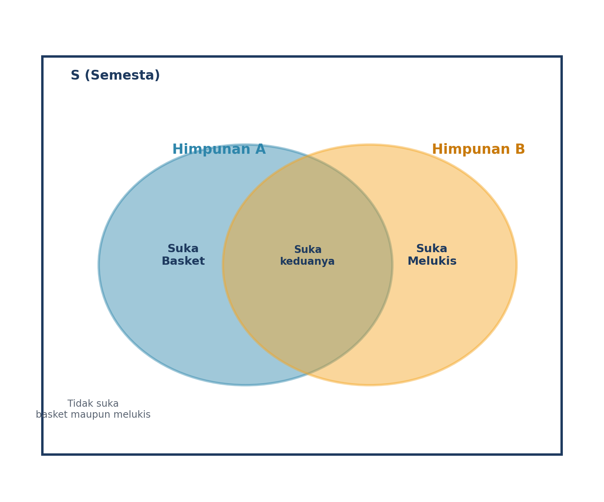
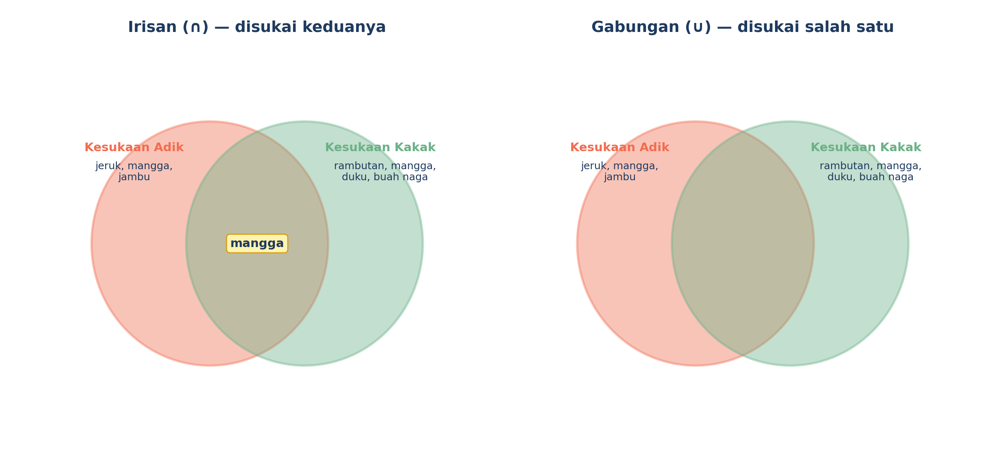
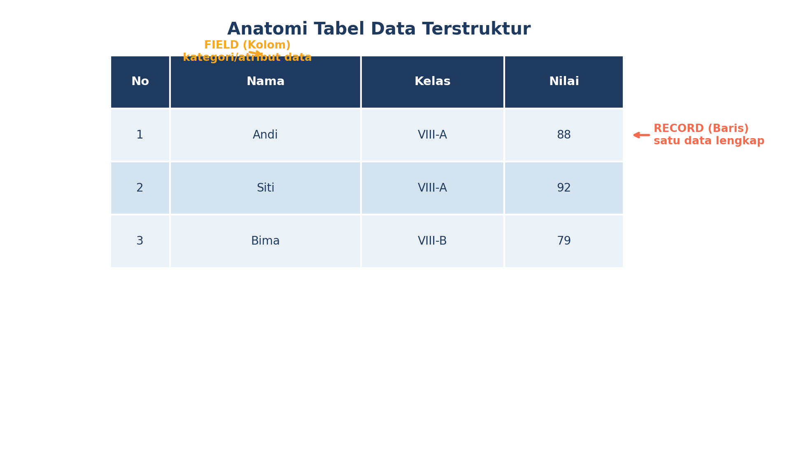

1Kenapa Sih Data Perlu Dirapikan?
Coba bayangkan gurumu punya setumpuk kertas berisi nama, kelas, dan hobi seluruh siswa — tapi ditulis acak, nggak berurutan, campur aduk. Susah banget kan kalau mau cari "siapa aja yang suka basket"?
Nah, kalau data itu disusun rapi berdasarkan kategori tertentu (misalnya dikelompokkan per hobi), kita jadi gampang banget mencarinya. Data yang tersusun rapi seperti ini disebut data terstruktur.

Data Tidak Terstruktur = data yang acak, belum dikelompokkan.
2Apa Itu Himpunan?
Salah satu cara paling dasar untuk merapikan data adalah dengan membuat himpunan. Simpelnya begini:
Contoh yang deket banget sama kehidupan kita sehari-hari, nih:
- Himpunan siswa kelas VIII-A yang suka sepak bola
- Himpunan warna favorit teman sekelasmu
- Himpunan mata pelajaran yang kamu pelajari hari Senin
- Himpunan anggota ekskul Pramuka di sekolahmu

Cara Menulis Himpunan
Anggota sebuah himpunan biasanya dituliskan di dalam tanda kurung kurawal { },
dipisahkan dengan koma. Contoh:
Hobi Andi = {membaca, sepak bola, menggambar}Warna Favorit Kelas = {merah, biru, hijau, kuning}
3Melihat Himpunan Lewat Gambar: Diagram Venn
Biar makin gampang dibayangkan, himpunan sering digambar pakai lingkaran-lingkaran yang disebut Diagram Venn. Persegi panjang di luar disebut "semesta" — artinya seluruh anggota yang sedang kita bicarakan.

Di gambar itu, ada bagian yang saling tumpang tindih (overlap) di tengah. Nah, bagian itu berarti ada anggota yang masuk di kedua himpunan sekaligus. Kece kan?
4Dua Trik Seru dengan Himpunan: Gabungan & Irisan
Yuk kita coba kasus ini: Adik suka buah jeruk, mangga, dan jambu. Kakak suka buah rambutan, mangga, duku, dan buah naga. Ada dua pertanyaan seru nih:
- "Buah apa aja yang disukai adik ATAU kakak?" → ini namanya gabungan (∪)
- "Buah apa aja yang disukai adik DAN kakak (dua-duanya)?" → ini namanya irisan (∩)

Irisan = {mangga} — cuma buah yang disukai keduanya.
5Himpunan itu Bekal buat Belajar Data yang Lebih Canggih!
Kalau kamu perhatikan, konsep himpunan itu sebenarnya mirip banget sama tabel data yang biasa kita lihat di aplikasi seperti Excel! Kolom itu ibarat kategori (field), dan baris itu satu data lengkap (record).

Jadi, semakin jago kamu mengelompokkan data pakai konsep himpunan, semakin gampang juga nanti kamu belajar mengolah data yang lebih besar dan kompleks. Keren, kan?
6Yuk, Coba Sendiri!
Sebelum lanjut ke LKPD, coba jawab dulu pertanyaan iseng ini bareng teman sebangkumu:
- Sebutkan 3 contoh himpunan yang ada di sekitarmu (selain contoh di halaman ini)!
- Tuliskan anggota himpunan "alat tulis yang ada di tasmu sekarang" menggunakan notasi
{ }. - Menurutmu, kenapa sih data yang terstruktur itu lebih "enak" dipakai dibanding data yang berantakan?
🌟 Rangkuman Kilat
Data yang rapi & terorganisasi → gampang dicari, dikelompokkan, dianalisis.
Kumpulan data dengan ciri yang sama, ditulis dengan notasi
{ }.Cara visual menggambarkan himpunan.
Gabungan (∪) = semua anggota. Irisan (∩) = anggota yang sama-sama dimiliki.
Sampai ketemu di pertemuan berikutnya, ya! Kita bakal belajar cara memakai himpunan buat memecahkan teka-teki logika seru. 🔍✨